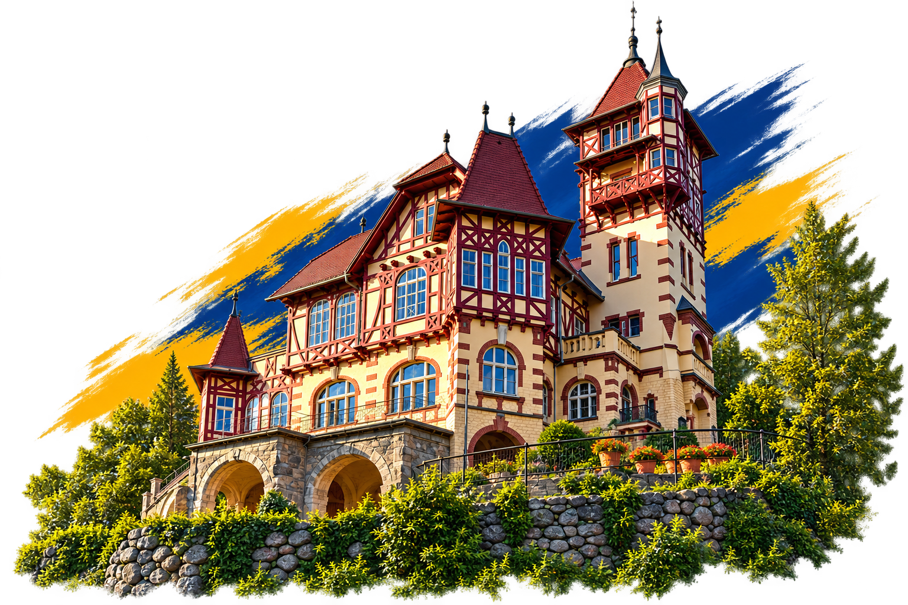

01
Michal Marosz
46 let • finanční manažer

OBNOVA VARNSDORFU
OBNOVA VARNSDORFU
OBNOVA VARNSDORFU
46 let • finanční manažer
27 let • zubní lékař
27 let • ekonom
73 let • jednatel firmy
75 let • podnikatel
65 let • pedagog a lektor
50 let • lékárnice
26 let • ekonom
65 let • podnikatel
37 let • podnikatel
50 let • podnikatel, majitel řeznictví
32 let • pedagog
51 let • všeobecná zdravotní sestra
27 let • podnikatel, truhlář
44 let • sklenář
35 let • personální konzultantka
27 let • servisní technik CNC strojů
51 let • účetní
49 let • podnikatel
41 let • uklízečka
24 let • řidič rozvozu jídla
OBNOVA VARNSDORFU
OBNOVA VARNSDORFU
Nejsilnější podporu nám dáte tak, že označíte jedním velkým křížkem záhlaví celé naší kandidátky OBNOVA VARNSDORFU – NÁŠ DOMOV bez dalších křížků. Tím společně využijeme potenciál volebního systému.